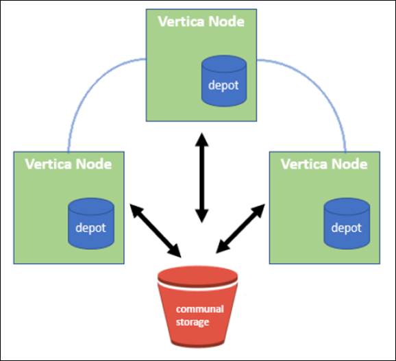

Soluzioni di terze parti validate
Soluzioni di terze parti validate
Database in modalità Vertica Eon che utilizza NetApp StorageGRID come storage comune
 Suggerisci modifiche
Suggerisci modifiche
Questa guida descrive la procedura per creare un database Vertica Eon Mode con storage comune su NetApp StorageGRID.
Introduzione
Vertica è un software per la gestione di database analitici. Si tratta di una piattaforma di storage colonnare progettata per gestire grandi volumi di dati, che consente performance di query molto veloci in uno scenario tradizionalmente intensivo. Un database Vertica viene eseguito in una delle due modalità: EON o Enterprise. Puoi implementare entrambe le modalità on-premise o nel cloud.
Le modalità EON ed Enterprise si differenziano principalmente per la posizione in cui memorizzano i dati:
-
I database EON Mode utilizzano lo storage comune per i propri dati. Questo è consigliato da Vertica.
-
I database in modalità Enterprise memorizzano i dati localmente nel file system dei nodi che compongono il database.
Architettura EON Mode
La modalità EON separa le risorse di calcolo dal livello di storage comune del database, consentendo la scalabilità separata di calcolo e storage. Vertica in Eon Mode è ottimizzato per gestire carichi di lavoro variabili e isolarli l'uno dall'altro utilizzando risorse di calcolo e storage separate.
La modalità EON memorizza i dati in un archivio di oggetti condiviso chiamato storage comune, un bucket S3, ospitato on-premise o su Amazon S3.

Storage in comune
Invece di memorizzare i dati in locale, Eon Mode utilizza una singola posizione di storage comune per tutti i dati e il catalogo (metadati). Lo storage comune è la posizione di storage centralizzata del database, condivisa tra i nodi del database.
Lo storage comune ha le seguenti proprietà:
-
Lo storage comune nel cloud o in sede è più resiliente e meno suscettibile alla perdita di dati dovuta a guasti dello storage rispetto allo storage su disco su singoli computer.
-
Tutti i dati possono essere letti da qualsiasi nodo utilizzando lo stesso percorso.
-
La capacità non è limitata dallo spazio su disco sui nodi.
-
Poiché i dati vengono memorizzati in maniera comune, è possibile scalare in modo elastico il cluster per soddisfare le esigenze in continua evoluzione. Se i dati fossero memorizzati localmente sui nodi, l'aggiunta o la rimozione di nodi richiederebbe lo spostamento di quantità significative di dati tra i nodi per spostarli dai nodi che vengono rimossi o nei nodi appena creati.
Il deposito
Uno svantaggio dello storage comune è la sua velocità. L'accesso ai dati da una posizione cloud condivisa è più lento rispetto alla lettura dal disco locale. Inoltre, la connessione allo storage comune può diventare un collo di bottiglia se molti nodi stanno leggendo i dati da esso contemporaneamente. Per migliorare la velocità di accesso ai dati, i nodi in un database Eon Mode mantengono una cache locale su disco di dati chiamata depot. Durante l'esecuzione di una query, i nodi verificano innanzitutto se i dati necessari si trovano nel deposito. In tal caso, la query viene completata utilizzando la copia locale dei dati. Se i dati non si trovano nel deposito, il nodo recupera i dati dallo storage comune e ne salva una copia nel deposito.
Consigli di NetApp StorageGRID
Vertica archivia i dati del database nello storage a oggetti sotto forma di migliaia (o milioni) di oggetti compressi (le dimensioni osservate sono da 200 a 500 MB per oggetto. Quando un utente esegue query di database, Vertica recupera l'intervallo di dati selezionato da questi oggetti compressi in parallelo utilizzando la chiamata get dell'intervallo di byte. Ogni byte-range GET è di circa 8 KB.
Durante il test delle query utente di depot del database da 10 TB, sono state inviate alla griglia da 4,000 a 10,000 richieste GET (byte-range GET) al secondo. Quando si esegue questo test utilizzando appliance SG6060, sebbene la percentuale di utilizzo della CPU per nodo appliance sia bassa (dal 20% al 30% circa), 2/3 CPU sono in attesa di i/O. Una percentuale molto piccola (da 0% a 0.5%) di attesa i/o viene osservata su SGF6024.
A causa dell'elevata richiesta di IOPS di piccole dimensioni con requisiti di latenza molto bassi (la media dovrebbe essere inferiore a 0.01 secondi), NetApp consiglia di utilizzare SFG6024 per i servizi di storage a oggetti. Se SG6060 è necessario per database di dimensioni molto grandi, il cliente deve collaborare con il team account Vertica per il dimensionamento dei depositi al fine di supportare il set di dati attivamente interrogato.
Per il nodo di amministrazione e il nodo di gateway API, il cliente può utilizzare SG100 o SG1000. La scelta dipende dal numero di richieste di query degli utenti in parallelo e dalle dimensioni del database. Se il cliente preferisce utilizzare un bilanciatore di carico di terze parti, NetApp consiglia un bilanciatore di carico dedicato per carichi di lavoro con domanda di performance elevate. Per il dimensionamento di StorageGRID, consulta l'account team di NetApp.
Altri consigli per la configurazione di StorageGRID includono:
-
Topologia della griglia. Non mischiare SGF6024 con altri modelli di appliance di storage sullo stesso sito di grid. Se si preferisce utilizzare SG6060 per la protezione dell'archivio a lungo termine, mantenere SGF6024 con un sistema di bilanciamento del carico di rete dedicato nel proprio sito di rete (sito fisico o logico) per un database attivo al fine di migliorare le performance. La combinazione di diversi modelli di appliance sullo stesso sito riduce le performance complessive del sito.
-
Protezione dei dati. Utilizzare copie replicate per la protezione. Non utilizzare la codifica di cancellazione per un database attivo. Il cliente può utilizzare l'erasure coding per una protezione a lungo termine dei database inattivi.
-
Non attivare la compressione della griglia. Vertica comprime gli oggetti prima di memorizzarli nello storage a oggetti. L'abilitazione della compressione grid non consente di risparmiare ulteriormente l'utilizzo dello storage e riduce significativamente le performance di BYTE-range GET.
-
HTTP rispetto alla connessione endpoint HTTPS S3. Durante il test di benchmark, abbiamo osservato un miglioramento delle performance pari a circa il 5% quando si utilizza una connessione HTTP S3 dal cluster Vertica all'endpoint del bilanciamento del carico di StorageGRID. Questa scelta deve essere basata sui requisiti di sicurezza del cliente.
I consigli per una configurazione Vertica includono:
-
Le impostazioni predefinite del depot del database Vertica sono attivate (valore = 1) per le operazioni di lettura e scrittura. NetApp consiglia vivamente di mantenere abilitate queste impostazioni di deposito per migliorare le performance.
-
Disattiva le limitazioni dello streaming. Per informazioni dettagliate sulla configurazione, consultare la sezione Disattivazione delle limitazioni dello streaming.
Installazione della modalità Eon on on on-premise con storage comune su StorageGRID
Nelle sezioni seguenti viene descritta la procedura per installare la modalità Eon on on on-premise con lo storage comune su StorageGRID. La procedura per configurare lo storage a oggetti compatibile con S3 (Simple Storage Service) on-premise è simile alla procedura della guida Vertica, "Installare un database in modalità Eon on on on-premise".
Per il test funzionale è stata utilizzata la seguente configurazione:
-
StorageGRID 11.4.0.4
-
Verticale 10.1.0
-
Tre macchine virtuali (VM) con sistema operativo CentOS 7.x per i nodi Vertica per formare un cluster. Questa configurazione è solo per il test funzionale, non per il cluster di database di produzione Vertica.
Questi tre nodi sono configurati con una chiave Secure Shell (SSH) per consentire SSH senza una password tra i nodi all'interno del cluster.
Informazioni richieste da NetApp StorageGRID
Per installare la modalità Eon on on on-premise con lo storage comune su StorageGRID, è necessario disporre delle seguenti informazioni sui prerequisiti.
-
Indirizzo IP o FQDN (Fully Qualified Domain Name) e numero di porta dell'endpoint StorageGRID S3. Se si utilizza HTTPS, utilizzare un'autorità di certificazione personalizzata (CA) o un certificato SSL autofirmato implementato sull'endpoint StorageGRID S3.
-
Nome bucket. Deve essere pre-esistente e vuoto.
-
Access key ID (ID chiave di accesso) e secret access key (chiave di accesso segreta) con accesso in lettura e scrittura al bucket.
Creazione di un file di autorizzazione per accedere all'endpoint S3
I seguenti prerequisiti si applicano quando si crea un file di autorizzazione per accedere all'endpoint S3:
-
Vertica è installato.
-
Un cluster viene configurato, configurato e pronto per la creazione del database.
Per creare un file di autorizzazione per accedere all'endpoint S3, attenersi alla seguente procedura:
-
Accedere al nodo Vertica in cui si desidera eseguire
admintoolsPer creare il database Eon Mode.L'utente predefinito è
dbadmin, Creato durante l'installazione del cluster Vertica. -
Utilizzare un editor di testo per creare un file in
/home/dbadmindirectory. Il nome del file può essere qualsiasi cosa si desideri, ad esempiosg_auth.conf. -
Se l'endpoint S3 utilizza una porta HTTP standard 80 o una porta HTTPS 443, ignorare il numero della porta. Per utilizzare HTTPS, impostare i seguenti valori:
-
awsenablehttps = 1, altrimenti impostare il valore su0. -
awsauth = <s3 access key ID>:<secret access key> -
awsendpoint = <StorageGRID s3 endpoint>:<port>Per utilizzare una CA personalizzata o un certificato SSL autofirmato per la connessione HTTPS dell'endpoint StorageGRID S3, specificare il percorso completo del file e il nome del file del certificato. Questo file deve trovarsi nella stessa posizione su ciascun nodo Vertica e disporre dell'autorizzazione di lettura per tutti gli utenti. Saltare questo passaggio se il certificato SSL StorageGRID S3 Endpoint è firmato da una CA pubblicamente conosciuta.
− awscafile = <filepath/filename>Ad esempio, vedere il seguente file di esempio:
awsauth = MNVU4OYFAY2xyz123:03vuO4M4KmdfwffT8nqnBmnMVTr78Gu9wANabcxyz awsendpoint = s3.england.connectlab.io:10443 awsenablehttps = 1 awscafile = /etc/custom-cert/grid.pem
+

In un ambiente di produzione, il cliente deve implementare un certificato server firmato da una CA pubblicamente conosciuta su un endpoint di bilanciamento del carico StorageGRID S3. -
Scelta di un percorso di deposito su tutti i nodi Vertica
Scegliere o creare una directory su ciascun nodo per il percorso di storage del deposito. La directory fornita per il parametro del percorso di storage del deposito deve essere la seguente:
-
Lo stesso percorso su tutti i nodi del cluster (ad esempio,
/home/dbadmin/depot) -
Essere leggibile e scrivibile dall'utente dbadmin
-
Storage sufficiente
Per impostazione predefinita, Vertica utilizza il 60% dello spazio del file system contenente la directory per lo storage del depot. È possibile limitare le dimensioni del deposito utilizzando
--depot-sizeargomento increate_dbcomando. Vedere "Dimensionamento del cluster Vertica per un database in modalità Eon" articolo per le linee guida generali sul dimensionamento di Vertica o consulta il tuo account manager Vertica.Il
admintools create_dblo strumento tenta di creare il percorso del deposito se non ne esiste uno.
Creazione del database Eon on on on-premise
Per creare il database Eon on on on-premise, attenersi alla seguente procedura:
-
Per creare il database, utilizzare
admintools create_dbtool.L'elenco seguente fornisce una breve spiegazione degli argomenti utilizzati in questo esempio. Consultare il documento Vertica per una spiegazione dettagliata di tutti gli argomenti richiesti e facoltativi.
-
-x <path/filename of authorization file created in "Creazione di un file di autorizzazione per accedere all'endpoint S3" >.
I dettagli dell'autorizzazione vengono memorizzati all'interno del database dopo la creazione. È possibile rimuovere questo file per evitare di esporre la chiave segreta S3.
-
--communal-storage-location <s3://storagegrid bucketname>
-
-S <comma-separated list of Vertica nodes to be used for this database>
-
-d <name of database to be created>
-
-p <password to be set for this new database>. Ad esempio, vedere il seguente comando di esempio:
admintools -t create_db -x sg_auth.conf --communal-storage-location=s3://vertica --depot-path=/home/dbadmin/depot --shard-count=6 -s vertica-vm1,vertica-vm2,vertica-vm3 -d vmart -p '<password>'
La creazione di un nuovo database richiede diversi minuti a seconda del numero di nodi del database. Quando si crea un database per la prima volta, viene richiesto di accettare il Contratto di licenza.
-
Ad esempio, vedere il seguente file di autorizzazione di esempio e. create db comando:
[dbadmin@vertica-vm1 ~]$ cat sg_auth.conf
awsauth = MNVU4OYFAY2CPKVXVxxxx:03vuO4M4KmdfwffT8nqnBmnMVTr78Gu9wAN+xxxx
awsendpoint = s3.england.connectlab.io:10445
awsenablehttps = 1
[dbadmin@vertica-vm1 ~]$ admintools -t create_db -x sg_auth.conf --communal-storage-location=s3://vertica --depot-path=/home/dbadmin/depot --shard-count=6 -s vertica-vm1,vertica-vm2,vertica-vm3 -d vmart -p 'xxxxxxxx'
Default depot size in use
Distributing changes to cluster.
Creating database vmart
Starting bootstrap node v_vmart_node0007 (10.45.74.19)
Starting nodes:
v_vmart_node0007 (10.45.74.19)
Starting Vertica on all nodes. Please wait, databases with a large catalog may take a while to initialize.
Node Status: v_vmart_node0007: (DOWN)
Node Status: v_vmart_node0007: (DOWN)
Node Status: v_vmart_node0007: (DOWN)
Node Status: v_vmart_node0007: (UP)
Creating database nodes
Creating node v_vmart_node0008 (host 10.45.74.29)
Creating node v_vmart_node0009 (host 10.45.74.39)
Generating new configuration information
Stopping single node db before adding additional nodes.
Database shutdown complete
Starting all nodes
Start hosts = ['10.45.74.19', '10.45.74.29', '10.45.74.39']
Starting nodes:
v_vmart_node0007 (10.45.74.19)
v_vmart_node0008 (10.45.74.29)
v_vmart_node0009 (10.45.74.39)
Starting Vertica on all nodes. Please wait, databases with a large catalog may take a while to initialize.
Node Status: v_vmart_node0007: (DOWN) v_vmart_node0008: (DOWN) v_vmart_node0009: (DOWN)
Node Status: v_vmart_node0007: (DOWN) v_vmart_node0008: (DOWN) v_vmart_node0009: (DOWN)
Node Status: v_vmart_node0007: (DOWN) v_vmart_node0008: (DOWN) v_vmart_node0009: (DOWN)
Node Status: v_vmart_node0007: (DOWN) v_vmart_node0008: (DOWN) v_vmart_node0009: (DOWN)
Node Status: v_vmart_node0007: (UP) v_vmart_node0008: (UP) v_vmart_node0009: (UP)
Creating depot locations for 3 nodes
Communal storage detected: rebalancing shards
Waiting for rebalance shards. We will wait for at most 36000 seconds.
Installing AWS package
Success: package AWS installed
Installing ComplexTypes package
Success: package ComplexTypes installed
Installing MachineLearning package
Success: package MachineLearning installed
Installing ParquetExport package
Success: package ParquetExport installed
Installing VFunctions package
Success: package VFunctions installed
Installing approximate package
Success: package approximate installed
Installing flextable package
Success: package flextable installed
Installing kafka package
Success: package kafka installed
Installing logsearch package
Success: package logsearch installed
Installing place package
Success: package place installed
Installing txtindex package
Success: package txtindex installed
Installing voltagesecure package
Success: package voltagesecure installed
Syncing catalog on vmart with 2000 attempts.
Database creation SQL tasks completed successfully. Database vmart created successfully.
| Dimensione oggetto (byte) | Percorso completo della chiave bucket/oggetto |
|---|---|
|
|
|
|
|
|
|
|
|
|
|
|
|
|
|
|
|
|
|
|
|
|
|
|
|
|
|
|
|
|
|
|
|
|
|
|
|
|
|
|
|
|
|
|
|
|
|
|
|
|
|
|
|
|
|
|
|
|
|
|
|
|
|
|
|
|
|
|
|
|
|
|
|
|
|
|
|
|
|
|
|
|
|
|
|
|
|
|
|
|
|
|
|
|
|
|
|
|
|
|
|
|
Disattivazione delle limitazioni dello streaming
Questa procedura si basa sulla guida Vertica per altri storage a oggetti on-premise e deve essere applicabile a StorageGRID.
-
Dopo aver creato il database, disattivare
AWSStreamingConnectionPercentageparametro di configurazione impostandolo su0. Questa impostazione non è necessaria per un'installazione on Mode on-premise con storage comune. Questo parametro di configurazione controlla il numero di connessioni all'archivio di oggetti utilizzate da Vertica per le letture in streaming. In un ambiente cloud, questa impostazione consente di evitare che i dati in streaming dall'archivio di oggetti utilizzino tutti gli handle di file disponibili. In questo modo, alcuni handle di file sono disponibili per altre operazioni di archiviazione di oggetti. A causa della bassa latenza degli archivi di oggetti on-premise, questa opzione non è necessaria. -
Utilizzare un
vsqlper aggiornare il valore del parametro. La password è la password del database impostata in "creazione del database Eon on on on-premise". Ad esempio, vedere il seguente esempio di output:
[dbadmin@vertica-vm1 ~]$ vsql
Password:
Welcome to vsql, the Vertica Analytic Database interactive terminal.
Type: \h or \? for help with vsql commands
\g or terminate with semicolon to execute query
\q to quit
dbadmin=> ALTER DATABASE DEFAULT SET PARAMETER AWSStreamingConnectionPercentage = 0; ALTER DATABASE
dbadmin=> \q
Verifica delle impostazioni del deposito in corso
Le impostazioni predefinite del depot del database Vertica sono attivate (valore = 1) per le operazioni di lettura e scrittura. NetApp consiglia vivamente di mantenere abilitate queste impostazioni di deposito per migliorare le performance.
vsql -c 'show current all;' | grep -i UseDepot DATABASE | UseDepotForReads | 1 DATABASE | UseDepotForWrites | 1
Caricamento dei dati di esempio (opzionale)
Se questo database è destinato al test e verrà rimosso, è possibile caricare i dati campione in questo database per il test. Vertica viene fornito con un set di dati di esempio, VMart, disponibile in /opt/vertica/examples/VMart_Schema/ Su ogni nodo Vertica. Sono disponibili ulteriori informazioni su questo set di dati di esempio "qui".
Per caricare i dati di esempio, procedere come segue:
-
Accedere come dbadmin a uno dei nodi Vertica: cd /opt/vertica/exemes/VMart_Schema/
-
Caricare i dati di esempio nel database e inserire la password del database quando richiesto nelle fasi c e d:
-
cd /opt/vertica/examples/VMart_Schema -
./vmart_gen -
vsql < vmart_define_schema.sql -
vsql < vmart_load_data.sql
-
-
Esistono più query SQL predefinite, alcune delle quali possono essere eseguite per confermare che i dati di test sono stati caricati correttamente nel database. Ad esempio:
vsql < vmart_queries1.sql
Dove trovare ulteriori informazioni
Per ulteriori informazioni sulle informazioni descritte in questo documento, consultare i seguenti documenti e/o siti Web:
Cronologia delle versioni
| Versione | Data | Cronologia delle versioni del documento |
|---|---|---|
Versione 1.0 |
Settembre 2021 |
Release iniziale. |
Di Angela Cheng